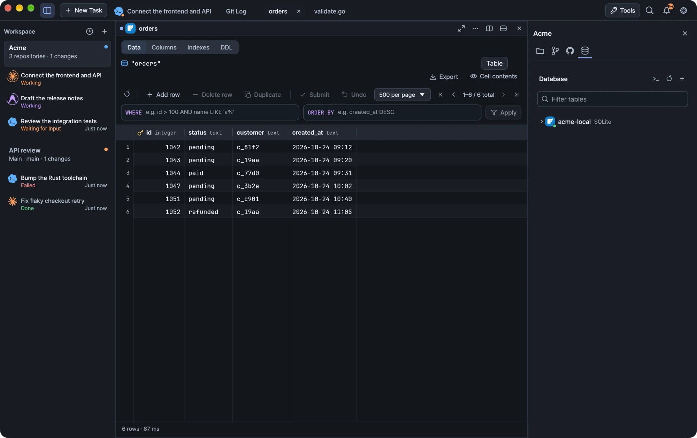

Connect to PostgreSQL, MySQL, MariaDB and SQLite, run SQL with completion, edit SELECT results and change table structure with reviewed SQL.
Kiln includes database tools next to your terminals: a connection explorer, a SQL console with completion, editable result grids and table structure forms. Nothing is written to the database until you apply it.

Kiln running a demo workspace.
Connect
Select Database (the database icon) in the workspace inspector, or choose databases from the titlebar Tools menu. Add a connection, then open a table or a SQL console.
Kiln supports PostgreSQL, MySQL, MariaDB and SQLite. Each one uses its own identifier quoting and metadata queries. Connection secrets are kept in Kiln's credential store.
Opening database tools does not change the workspace root or move an agent into another repository.
Run SQL
Action
How
Run the statement at the caret
Run or ⌘Enter
Run only the selected text
Select it, then Run or ⌘Enter
Run every statement in the editor
Run all or ⌘⌥Enter
A semicolon belongs to the statement before it, and semicolons inside strings, comments or quoted identifiers do not split a statement. A blank or comment-only selection runs nothing.
SQL completion
Suggestions appear as you type an identifier, or an alias followed by a dot. You can also open them with ⌃Space, ⌥Esc or the console's code icon. ⌘Space works when macOS passes it to Kiln. Kiln does not override Spotlight.
Tip macOS may use ⌃Space to switch input sources. The code icon and ⌥Esc work without changing your Mac's shortcuts.
What you get depends on where the caret is:
Context
Suggestions
After FROM or JOIN
Tables and schemas. Table names are inserted with their schema.
SELECT, WHERE, JOIN ... ON, UPDATE ... SET, INSERT column list
Columns of the referenced tables, including aliases defined after the caret
The connection's dialect also supplies common SQL keywords and function names. Inserting a function places the caret inside its parentheses.
Browse with the arrow keys or the mouse wheel, insert with Tab or Enter, and dismiss with Esc. Hover a candidate to see its full name and metadata. Completion never runs SQL.
Keep metadata current
Schema changes you run in this console refresh completion automatically.
After changes made elsewhere, use the refresh icon.
If loading metadata fails, your SQL stays as it is. Retry with the refresh icon.
Metadata loads in the background and never reopens a connection you closed.
What completion does not know
Completion reads the database catalog, separately from your console session, so it does not see TEMP objects, SQLite ATTACH, MySQL USE or PostgreSQL search_path changes. Use explicit schema names for persistent tables. Columns of CTEs and derived tables are not inferred, and Kiln hides table suggestions that would claim those columns wrongly. Keyword and function lists cover common syntax, not every server extension.
SQL completion never sends query text or table rows to an external AI service.
Edit query results
For a supported single-table SELECT, double-click a cell, or press Enter or F2, to change it. Changes stay local until you choose Apply changes. Undo discards them.
Use the value sidebar for longer values. Stage its text with Apply to cell, or reset it, before you select another cell or run another query. Copying selected cells includes staged values.
Which results can be edited
The result must come from one permanent table, using its columns directly. Aliases and filters are fine. Include every column of the primary key, or of a non-null unique key. The key does not need to be called id.
These stay read-only, and Kiln explains why:
Joins, aggregates and computed columns
The same source column selected twice
Views and temporary tables
Results without the complete row key
Generated, binary and unsupported column types
Result editing works with PostgreSQL, SQLite, and MySQL or MariaDB with transactional InnoDB tables. It does not insert or delete rows. Use SQL for those.
How changes are applied
Kiln writes your changes in a separate transaction, using the row key and the original values you saw. Each changed row must match exactly one row in the database. If a row was deleted, changed by someone else or is ambiguous, the whole transaction fails and your local changes stay for review.
Before writing, Kiln locks the table and rechecks its identity and its column and key definitions. If the structure changed since your query, run the query again. Applying changes does not commit an explicit BEGIN in your console.
If the write succeeds but the refresh fails, Kiln tells you the write was saved and makes the stale result read-only. It never resubmits a change automatically.
Tables, columns and indexes
Right-click a table in the explorer for Open table, Edit table… and Drop table…. Edit table… opens one dialog with Columns, Indexes and DDL, plus table rename. Views open in the same structure browser, read-only.
Open a table to switch between Data, Columns, Indexes and DDL in its tab. DDL can be refreshed and copied.
Columns
Each column row offers edit, rename and drop. Use Add column to set a name, SQL type, nullability and an optional default. String defaults need SQL quotes, for example 'guest', while CURRENT_TIMESTAMP is an expression. Generated or identity columns and primary-key removal need manual DDL.
Indexes
Indexes lists key columns in order, uniqueness, method and the full definition. To add an index, select columns, set their order and direction, and optionally make it unique. Expression, partial and engine-specific indexes can be created in the SQL console. Primary-key and constraint-owned indexes cannot be dropped from this form.
Review before applying
Every structure change follows Preview SQL → review → Apply to database.
Opening a form or previewing never runs DDL.
Editing a field clears the preview and its approval.
Deleting a table also asks you to type its exact name.
Pending row edits in an open table block structure changes.
If an operation fails, your input is kept so you can correct it.
PostgreSQL applies changes in a transaction. MySQL and MariaDB run a single DDL statement, without multi-statement rollback. For SQLite, attribute edits rebuild the table in a transaction, keeping values, indexes, triggers and dependent views, and roll back on failure. Dependent objects can block a column or table drop. Kiln does not silently delete them.
Closing and recovery
Kiln will not close a tab, workspace or the app while a database write is still running. The block clears when the write finishes, even if the tab is hidden.
When you keep work on exit, staged values and unfinished text are saved locally. On restart they appear in a review-only section with the original query and values, which you can copy, export or delete. Nothing is rerun or resubmitted. Run the query again and compare before you re-enter a change.
Warning Local recovery files can contain database values. After an abrupt exit during a write, check whether the database already committed it before applying again.
Windows
Database tools work the same on Windows. Closing the window waits for running database writes, as on macOS.
문서도구
데이터베이스
PostgreSQL, MySQL, MariaDB, SQLite에 연결하고, 자동 완성으로 SQL을 작성해 실행하고, SELECT 결과를 편집하고, 검토한 SQL로 테이블 구조를 바꿉니다.
Kiln은 터미널 옆에서 쓸 수 있는 데이터베이스 도구를 제공합니다. 연결 탐색기, 자동 완성을 지원하는 SQL 콘솔, 편집할 수 있는 결과 그리드, 테이블 구조 양식이 있습니다. 직접 적용하기 전까지는 데이터베이스에 아무것도 쓰지 않습니다.
데모 워크스페이스로 실행한 Kiln
연결하기
워크스페이스 인스펙터에서 데이터베이스(데이터베이스 아이콘)를 선택하거나, 제목 표시줄의 도구 메뉴에서 데이터베이스를 고릅니다. 연결을 추가한 뒤 테이블이나 SQL 콘솔을 엽니다.
Kiln은 PostgreSQL, MySQL, MariaDB, SQLite를 지원하며, 데이터베이스마다 고유한 식별자 인용 방식과 메타데이터 쿼리를 사용합니다. 연결 비밀 정보는 Kiln의 자격 증명 저장소에 보관됩니다.
데이터베이스 도구를 열어도 워크스페이스 루트는 바뀌지 않고, 에이전트가 다른 저장소로 옮겨 가지도 않습니다.
SQL 실행하기
동작
방법
커서가 있는 문장 실행
실행 또는 ⌘Enter
선택한 텍스트만 실행
텍스트를 선택하고 실행 또는 ⌘Enter
편집기의 모든 문장 실행
모두 실행 또는 ⌘⌥Enter
세미콜론은 바로 앞 문장에 속합니다. 문자열, 주석, 인용된 식별자 안에 있는 세미콜론으로는 문장이 나뉘지 않습니다. 비어 있거나 주석만 있는 영역을 선택하면 아무것도 실행되지 않습니다.
SQL 자동 완성
식별자를 입력하거나 별칭 뒤에 점을 찍으면 제안이 나타납니다. ⌃Space, ⌥Esc, 콘솔의 코드 아이콘으로 직접 열 수도 있습니다. ⌘Space는 macOS가 이 키를 Kiln에 넘겨줄 때 동작하며, Kiln이 Spotlight 단축키를 가로채지는 않습니다.
팁 macOS에서는 ⌃Space가 입력 소스 전환에 쓰일 수 있습니다. 코드 아이콘과 ⌥Esc는 Mac의 단축키 설정을 바꾸지 않아도 동작합니다.
커서 위치에 따라 제안되는 항목이 달라집니다.
위치
제안
FROM 또는 JOIN 뒤
테이블과 스키마. 테이블 이름은 스키마와 함께 삽입됩니다.
SELECT, WHERE, JOIN ... ON, UPDATE ... SET, INSERT 컬럼 목록
참조하는 테이블의 컬럼. 커서 뒤에 정의된 별칭도 반영합니다.
연결된 데이터베이스의 방언에 맞춰 자주 쓰는 SQL 키워드와 함수 이름도 제안합니다. 함수를 삽입하면 커서가 괄호 안에 놓입니다.
화살표 키나 마우스 휠로 이동하고, Tab이나 Enter로 삽입하고, Esc로 닫습니다. 후보에 마우스를 올리면 전체 이름과 메타데이터를 볼 수 있습니다. 자동 완성이 SQL을 실행하는 일은 없습니다.
메타데이터 최신 상태로 유지하기
이 콘솔에서 실행한 스키마 변경은 자동 완성에 바로 반영됩니다.
다른 곳에서 스키마를 바꿨다면 새로 고침 아이콘을 누르세요.
메타데이터를 불러오지 못해도 작성한 SQL은 그대로 남습니다. 새로 고침 아이콘으로 다시 시도하세요.
메타데이터는 백그라운드에서 불러오며, 닫은 연결을 다시 열지 않습니다.
자동 완성이 알 수 없는 것
자동 완성은 콘솔 세션과 별도로 데이터베이스 카탈로그를 읽습니다. 그래서 TEMP 객체, SQLite ATTACH, MySQL USE, PostgreSQL search_path 변경은 반영되지 않습니다. 영구 테이블에는 스키마 이름을 명시하세요. CTE와 파생 테이블의 컬럼은 추론하지 않으며, 그런 컬럼을 잘못 안내할 수 있는 테이블 제안은 숨깁니다. 키워드와 함수 목록은 자주 쓰는 문법 위주이며, 서버 확장을 모두 다루지는 않습니다.
SQL 자동 완성은 쿼리 텍스트나 테이블 행을 외부 AI 서비스로 보내지 않습니다.
쿼리 결과 편집하기
지원되는 단일 테이블 SELECT 결과에서는 셀을 더블클릭하거나 Enter 또는 F2를 눌러 값을 바꿀 수 있습니다. 변경 사항은 변경 반영을 선택하기 전까지 로컬에만 있습니다. 되돌리기를 선택하면 변경 사항을 버립니다.
긴 값은 값 사이드바에서 편집하세요. 다른 셀을 선택하거나 다른 쿼리를 실행하기 전에 셀에 반영으로 텍스트를 반영해 두거나, 초기화하세요. 선택한 셀을 복사하면 반영해 둔 값도 함께 복사됩니다.
편집할 수 있는 결과
결과는 영구 테이블 하나에서 컬럼을 그대로 가져온 것이어야 합니다. 별칭과 필터는 써도 됩니다. 기본 키의 모든 컬럼, 또는 NULL이 아닌 고유 키의 모든 컬럼을 포함하세요. 키 이름이 꼭 id일 필요는 없습니다.
다음은 읽기 전용으로 남으며, Kiln이 그 이유를 알려 줍니다.
조인, 집계, 계산된 컬럼
같은 원본 컬럼을 두 번 선택한 경우
뷰와 임시 테이블
행 키가 모두 포함되지 않은 결과
생성된 컬럼, 바이너리 컬럼, 지원하지 않는 컬럼 타입
결과 편집은 PostgreSQL, SQLite, 그리고 트랜잭션을 지원하는 InnoDB 테이블을 쓰는 MySQL·MariaDB에서 동작합니다. 행을 추가하거나 삭제하는 기능은 없으니, 이런 작업에는 SQL을 쓰세요.
변경을 적용하는 방식
Kiln은 행 키와 내가 본 원래 값을 기준으로, 별도의 트랜잭션에서 변경을 씁니다. 변경한 행은 각각 데이터베이스의 행 하나와 정확히 일치해야 합니다. 행이 삭제되었거나, 다른 사람이 바꿨거나, 어느 행인지 모호하면 트랜잭션 전체가 실패하고, 로컬 변경은 검토할 수 있도록 남습니다.
쓰기 전에 Kiln은 테이블을 잠그고, 테이블이 같은 테이블인지와 컬럼·키 정의를 다시 확인합니다. 쿼리를 실행한 뒤 구조가 바뀌었다면 쿼리를 다시 실행하세요. 변경을 적용해도 콘솔에서 직접 연 BEGIN 트랜잭션은 커밋되지 않습니다.
쓰기는 성공했지만 결과를 새로 고치지 못하면, Kiln은 쓰기가 저장되었다고 알리고 오래된 결과를 읽기 전용으로 바꿉니다. 변경을 자동으로 다시 제출하는 일은 없습니다.
테이블, 컬럼, 인덱스
탐색기에서 테이블을 우클릭하면 테이블 열기, 테이블 수정…, 테이블 삭제…가 나타납니다. 테이블 수정…을 선택하면 컬럼, 인덱스, DDL과 테이블 이름 변경을 한곳에 모은 대화상자가 열립니다. 뷰도 같은 구조 브라우저에서 읽기 전용으로 열립니다.
테이블을 열면 탭 안에서 데이터, 컬럼, 인덱스, DDL을 오갈 수 있습니다. DDL은 새로 고치거나 복사할 수 있습니다.
컬럼
각 컬럼 행에서 편집, 이름 변경, 삭제를 할 수 있습니다. 컬럼 추가에서는 이름, SQL 타입, NULL 허용 여부, 기본값(선택)을 정합니다. 문자열 기본값에는 'guest'처럼 SQL 따옴표를 붙여야 하고, CURRENT_TIMESTAMP는 표현식으로 취급합니다. 생성 컬럼, identity 컬럼, 기본 키 제거는 DDL을 직접 작성해야 합니다.
인덱스
인덱스에는 키 컬럼이 순서대로 표시되고, 고유 여부, 방식, 전체 정의도 함께 나옵니다. 인덱스를 추가하려면 컬럼을 고르고 순서와 방향을 정한 뒤, 필요하면 고유 인덱스로 지정합니다. 표현식 인덱스, 부분 인덱스, 엔진 전용 인덱스는 SQL 콘솔에서 만들 수 있습니다. 기본 키 인덱스와 제약 조건에 딸린 인덱스는 이 양식에서 삭제할 수 없습니다.
적용 전에 검토하기
모든 구조 변경은 SQL 미리보기 → 검토 → DB에 적용 순서로 진행됩니다.
양식을 열거나 미리 보기만 해서는 DDL이 실행되지 않습니다.
필드를 고치면 미리보기와 승인이 초기화됩니다.
테이블을 삭제할 때는 테이블 이름을 정확히 입력해야 합니다.
열린 테이블에 아직 적용하지 않은 행 편집이 있으면 구조를 바꿀 수 없습니다.
작업이 실패해도 입력한 내용은 남아 있으므로 고칠 수 있습니다.
PostgreSQL은 트랜잭션 안에서 변경을 적용합니다. MySQL과 MariaDB는 DDL 문 하나를 실행하며, 여러 문에 걸친 롤백은 지원하지 않습니다. SQLite에서 속성을 편집하면 트랜잭션 안에서 테이블을 다시 만들면서 값, 인덱스, 트리거, 의존하는 뷰를 유지하고, 실패하면 롤백합니다. 의존하는 객체가 있으면 컬럼이나 테이블을 삭제하지 못할 수 있습니다. Kiln이 그런 객체를 몰래 삭제하지는 않습니다.
닫기와 복구
데이터베이스 쓰기가 진행 중이면 Kiln은 탭, 워크스페이스, 앱을 닫지 않습니다. 쓰기가 끝나면 탭이 숨겨져 있더라도 이 제한이 풀립니다.
종료할 때 작업을 보관하기로 하면, 반영해 둔 값과 작성 중이던 텍스트가 로컬에 저장됩니다. 다시 시작하면 원래 쿼리, 값과 함께 검토 전용 섹션에 나타나며, 복사하거나 내보내거나 삭제할 수 있습니다. 다시 실행되거나 다시 제출되는 것은 없습니다. 변경을 다시 입력하기 전에 쿼리를 다시 실행해 비교해 보세요.
주의 로컬 복구 파일에는 데이터베이스 값이 들어 있을 수 있습니다. 쓰기 도중 앱이 갑자기 종료되었다면, 다시 적용하기 전에 데이터베이스에 이미 커밋되었는지 확인하세요.
Windows
데이터베이스 도구는 Windows에서도 똑같이 동작합니다. macOS에서처럼 창을 닫으면 진행 중인 데이터베이스 쓰기가 끝날 때까지 기다립니다.